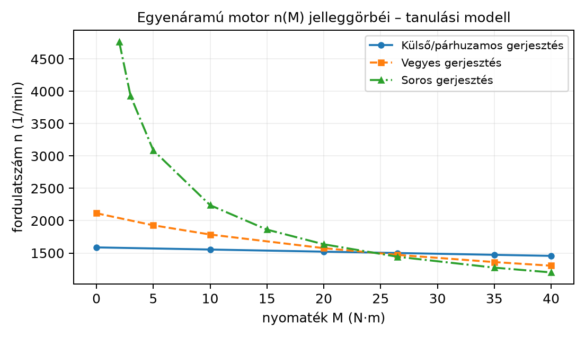
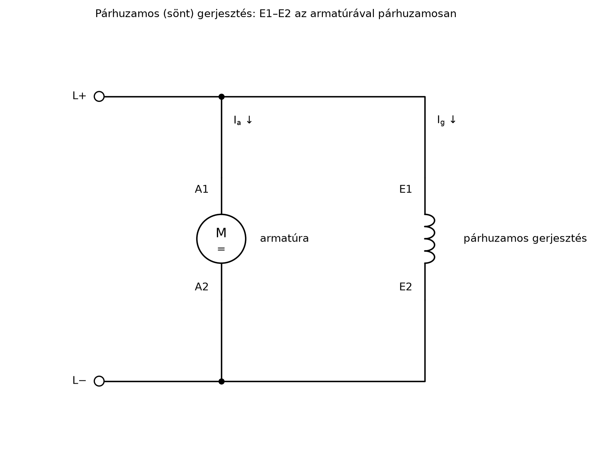
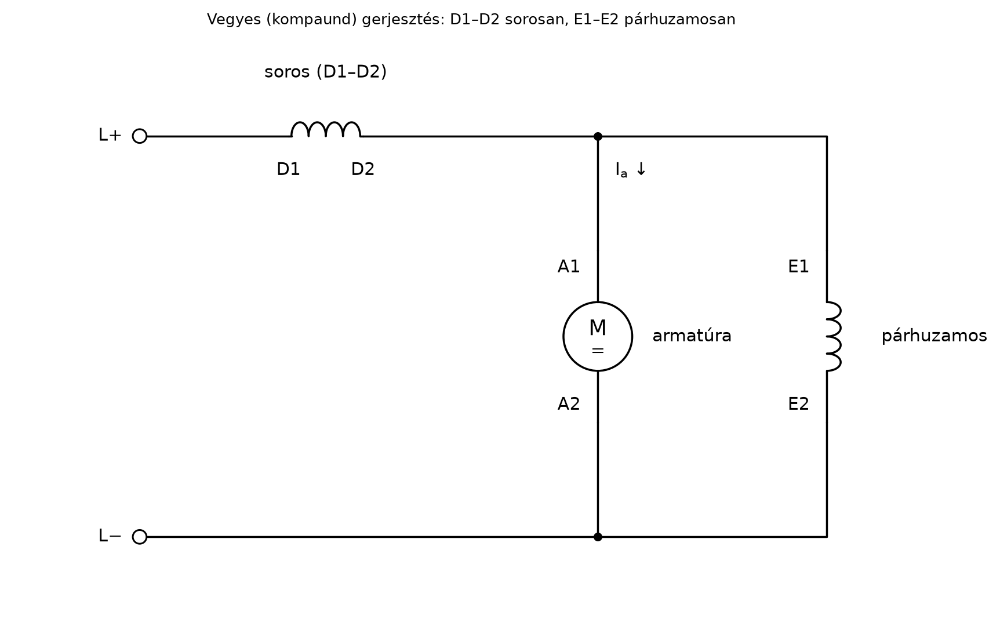

Amikor egy régi villástargonca nem indul, a szerelő először a keféket, a kommutátort és a gerjesztőtekercset ellenőrzi. Amikor egy régi szerszámgép egyenáramú hajtása terhelés hatására lelassul vagy éppen megszalad, a hiba oka gyakran a gerjesztés módjában, az indítóellenállásban vagy a kefeszerkezetben keresendő. Az egyenáramú gép ma már nem a legelterjedtebb hajtás, de az ipari környezetben, járművekben, felvonókban, darukban és régi szerszámgépekben még mindig találkozunk vele. Aki javítani vagy karbantartani akarja, annak pontosan kell értenie, hogyan jön létre a nyomaték, miért forog a gép, és hogyan lehet a fordulatszámot szabályozni.
Az egyenáramú gép forgórészében (armatúrájában) váltakozó irányú feszültség indukálódik, miközben a gép egyenárammal működik. A kommutátor (áramirányító, régi nevén kollektor) és a kefék együttese mechanikus egyenirányítóként dolgozik: a forgórész tekercseiben keletkező váltakozást úgy kapcsolja át, hogy a külső kapcsokon egyenirányú feszültség jelenjen meg generátoros üzemben, illetve a betáplált egyenáramot úgy váltogatja a forgórész tekercseire, hogy a nyomaték mindig azonos irányú legyen motoros üzemben.
A következő diagram a három leggyakoribb gerjesztési mód fordulatszám–nyomaték jellegét mutatja. A tényleges görbék a gép adataitól függenek, ezért az ábra csak a tipikus viselkedést szemlélteti.

Az ábrán látszik: a külső vagy párhuzamos gerjesztésű motor fordulatszáma alig változik a terheléssel („merev” jelleggörbe), a soros motor fordulatszáma erősen csökken növekvő nyomatéknál, a vegyes gerjesztés pedig átmeneti viselkedést mutat.
Definíció. Az egyenáramú gép olyan forgó villamos gép, amelynek forgórészében váltakozó irányú feszültség indukálódik, de a kommutátor és a kefék ezt a külső kapcsokon egyenirányúvá alakítják.
A gép fő részei:
Megjegyzés. A kommutátor és a kefék a gép legkényesebb, kopásnak kitett részei. A kefék cseréje, a kommutátor felületének tisztítása és a rugónyomás ellenőrzése rutin karbantartási feladat.
A gerjesztőtekercs táplálásának módja alapvetően meghatározza a motor fordulatszám–nyomaték viselkedését.
Szabály. A párhuzamos vagy külső gerjesztésű motor fordulatszáma közel állandó, mert a fluxus alig függ a terheléstől. A soros motor nagy indítónyomatékot ad, de üresjáratban a fluxus lecsökkenhet, és a fordulatszám veszélyesen megnőhet („megszaladás”).
A kapocsdobozban a gerjesztési módot a kapocsjelölés alapján ismered fel: armatúra A1–A2, külső gerjesztés F1–F2, párhuzamos gerjesztés E1–E2, soros gerjesztés D1–D2 (segédpólus: B1–B2; a jelölés ellenőrizendő: MSZ EN 60034-8 és a gép kapocstáblája). Az alábbi négy kapcsolási rajz ugyanazt az armatúrát (kör „M” és „=” jellel) mutatja a négy gerjesztési móddal; L+ és L− az egyenáramú tápfeszültség.



A rajzok összevetése: a külső gerjesztésnél a gerjesztőkör teljesen független; a párhuzamosnál a gerjesztőtekercs a kapocsfeszültségen van, árama nem függ a terheléstől (merev jelleggörbe); a sorosnál a teljes armatúraáram átfolyik a gerjesztőtekercsen (lágy jelleggörbe, megszaladhat); a vegyesnél mindkét tekercs megvan (átmeneti jelleg).
A következő ábra a négy mód fordulatszám–terhelés összefüggését egy tanulási modellből számolja az és az összefüggéssel (U = 220 V, = 20 A, = 0,6 Ω, = 1500 1/min; névleges nyomatéknál, kb. 26,5 N·m-nél mindhárom görbe 1440–1500 1/min körül van, a soros motor 2 N·m-nél viszont már kb. 4800 1/min-en járna). A HTML-kiadásban kiválaszthatod a gerjesztési módot, csúszkával állíthatod a terhelést, és párhuzamos gerjesztésnél kipróbálhatod a gerjesztésszakadást (megszaladás).

Törvény. A forgó egyenáramú gép armatúrájában indukált feszültség:
ahol az indukált feszültség (V), a pólusonkénti fluxus (Wb), a szögsebesség (rad/s), pedig a gép konstrukciójától függő állandó.
Törvény. Az elektromágneses nyomaték:
ahol az armatúraáram (A), a nyomaték (N·m).
A két képletben ugyanaz a állandó szerepel, ha konzisztens SI-egységeket használunk. Ez a következőképpen látható be: a mechanikai teljesítmény , a villamos teljesítmény, amely az indukált feszültségen átadódik, . Ideális esetben a kettő egyenlő, ezért
Mindkét oldalt -val osztva:
Összefüggés. Motoros üzemben a kapocsfeszültség a következő egyensúlyi egyenletet elégíti ki:
ahol az armatúrakör teljes ellenállása (armatúratekercs, kefék, esetleg soros gerjesztőtekercs ellenállása). Innen az indukált feszültség:
és a fordulatszám:
Ez a képlet a fő kiindulópontja a fordulatszám-szabályozásnak.
1. példa – Párhuzamos gerjesztésű motor névleges adatai
Adott: egy egyenáramú párhuzamos gerjesztésű motor kapocsfeszültsége , armatúraellenállása , armatúraárama . A gépállandó és a fluxus szorzata (a névleges pontban).
Keresett: az indukált feszültség, a fordulatszám és a nyomaték.
Számítás. Először az indukált feszültség:
A szögsebesség:
A percenkénti fordulatszám:
A nyomaték:
Ellenőrzés. A mechanikai teljesítmény , az indukált teljesítmény .
2. példa – Soros gerjesztésű motor indítása
Adott: soros gerjesztésű motor, amelynek armatúra- és gerjesztőköri ellenállása együtt . A hálózati kapocsfeszültség .
Keresett: a közvetlen indításkor fellépő áramcsúcs, ha az indukált feszültség kezdetben nulla, valamint az az indítóellenállás, amely az indítási áramot -re korlátozza.
Számítás. Indításkor , ezért . Az áram:
Ez igen nagy érték, amely a keféket, a kommutátort és a tápláló hálózatot károsíthatja. A kívánt -es indítási áramhoz szükséges teljes ellenállás:
A külső indítóellenállás:
Ellenőrzés. Ha a motor felgyorsul, az indukált feszültség nő, az áram csökken. Az indítóellenállást fokozatosan ki kell iktatni, hogy a gép elérje a névleges fordulatszámát.
Indítás. Az egyenáramú motor indításakor a fordulatszám még nulla, így az indukált feszültség is nulla. Az indítási áramot csak az armatúrakör kis ellenállása korlátozza, ami veszélyesen nagy lehet. A kíméletes indítás módszerei:
Fordulatszám-szabályozás. A képletből három alapvető szabályozási mód következik:
Szabvány. A forgó villamos gépek általános követelményeit az MSZ EN 60034 sorozat tartalmazza (ellenőrizendő: aktuális kiadás és az egyenáramú gépekre vonatkozó rész). A gépek adattábláján a gyártó megadja a névleges feszültséget, áramot, fordulatszámot és gerjesztési módot; a szerelőnek mindig ezeket az adatokat kell alapul vennie.
Régi villamos mozdonyokban és villamosokban hosszú ideig soros gerjesztésű egyenáramú motorokat használtak. A soros motor előnye, hogy induláskor az áram nagy, ezért a fluxus is nagy, így a nyomaték már kis fordulatszámon is igen jelentős – éppen ez kell a szerelvény megindításához. A gyakorlatban azonban a soros motor üresjáratban való járatása tilos, mert a fluxus lecsökken, és a gép megugorhatja a megengedett fordulatszámot, ami a kommutátor és a tekercsek mechanikai sérüléséhez vezethet.
Biztonsági korlát. A beállítás és a mérés előtt a gépet a feszültségmentesítés öt szabálya szerint kell előkészíteni: leválasztás (az armatúra- és a gerjesztőkörben is), visszakapcsolás elleni biztosítás, a feszültségmentesség megállapítása, földelés és rövidre zárás ott, ahol előírt, a közeli feszültség alatti részek lefedése; meg kell várni a forgó részek teljes leállását. A gerjesztőtekercs induktív energiája miatt a DC-kör bontásakor ívveszély van. A munkát csak jogosult, képzett személy végezheti. A forgó gép tengelye, a kommutátor és a kefék sérülést okozhatnak.
1. feladat (A)
Definiáld röviden, mi a kommutátor feladata, és miért van rá szükség az
egyenáramú gépben?
2. feladat (A)
Egy párhuzamos gerjesztésű motor kapocsfeszültsége
,
armatúraellenállása
,
armatúraárama
.
A gépállandó és a fluxus szorzata
.
Számítsd ki az indukált feszültséget, a szögsebességet, a percenkénti
fordulatszámot és a nyomatékot.
3. feladat (B)
Soros gerjesztésű motor armatúra- és gerjesztőköri ellenállása együtt
.
A hálózati feszültség
.
Mekkora indítóellenállást kell az áramkörbe iktatni, hogy az indítási
áram ne haladja meg a
-t?
Mekkora lenne az áram indítóellenállás nélkül?
4. feladat (B)
A 2. feladat motorjánál a terhelés nő, ezért az armatúraáram
-re
emelkedik. A fluxus állandó marad. Számítsd ki az új fordulatszámot és
nyomatékot. Hány százalékkal csökkent a fordulatszám a névleges értékhez
képest?
5. feladat (C)
Magyarázd meg a képlet alapján, mi történik a párhuzamos gerjesztésű
motor fordulatszámával, ha a terhelés (azaz az armatúraáram) hirtelen
megnő, miközben a kapocsfeszültség és a fluxus állandó. Miért nem szabad
a párhuzamos gerjesztőkört üzem közben megszakítani?
6. feladat (D)
Egy régi egyenáramú motor erős szikrázást mutat a keféknél, és a
fordulatszám ingadozik. Milyen ellenőrzéseket végeznél el
feszültségmentes állapotban? Sorold fel a lépéseket, és indokold, milyen
hibára utalhatnak a jelek.
Önellenőrzés – válaszok
1. feladat megoldása (A)
A kommutátor a forgórész tekercseinek végeit a kefék alá kapcsolja.
Forgás közben mindig azokat a tekercsoldalakat kapcsolja be, amelyekben
az indukált feszültség éppen a kívánt irányú, így a keféken egyenirányú
feszültség jelenik meg (generátoros üzem), illetve az egyenáramot úgy
váltogatja, hogy a forgatónyomaték iránya állandó maradjon (motoros
üzem).
2. feladat megoldása (A)
Indukált feszültség:
Szögsebesség:
Fordulatszám:
Nyomaték:
Ellenőrzés: , .
3. feladat megoldása (B)
Indítási áram indítóellenállás nélkül:
A -es korláthoz szükséges teljes ellenállás:
Indítóellenállás:
4. feladat megoldása (B)
Az indukált feszültség az új áramnál:
Az új szögsebesség:
Az új fordulatszám:
A fordulatszám-csökkenés a korábbi értékhez képest:
ami százalékban:
Az új nyomaték:
A terhelés növekedése tehát kis fordulatszámesést okozott, miközben a nyomaték nőtt.
5. feladat megoldása (C)
A képlet szerint:
Ha a terhelés nő, nő, így az feszültségesés nő, ezért és vele csökken. Párhuzamos gerjesztésnél a fluxus közel állandó, ezért a fordulatszám-csökkenés mérsékelt. Ha a gerjesztőáramkör megszakad, a maradék fluxusra esik le, és a képlet nevezője nagyon kicsi lesz: a fordulatszám rendkívül megnőhet, ami a gép tönkremeneteléhez vezet. Ezért a gerjesztőkört nem szabad üzem közben megszakítani, és néha megszakadás elleni védelmet alkalmaznak.
6. feladat megoldása (D)
Feszültségmentes állapotban a következő lépéseket végezném el:
A szikrázás és a fordulatszám-ingadozás leggyakoribb okai: kopott kefék, rossz kefenyomás, szennyezett vagy barázdált kommutátor, valamint tekercs- vagy kommutátorszelet-hiba. A feltárt hibát a gyártói utasítás szerint kell javítani, és a munkát dokumentálni kell.
Az egyenáramú gép szerkezetének alapja az állórészen elhelyezett gerjesztőtekercs, a forgórész armatúrája és a kommutátor-kefe rendszer. A kommutátor mechanikus egyenirányítóként teszi lehetővé, hogy a forgórészben indukált váltakozó feszültségből egyenáramú kimenet legyen, illetve motoros üzemben az egyenáramot a nyomaték fenntartása érdekében váltogassa. A gerjesztési módok – külső, párhuzamos, soros, vegyes – alapvetően meghatározzák a fordulatszám–nyomaték jelleget. A motor alapösszefüggései: (indukált feszültség) és (nyomaték). Motoros üzemben , így a fordulatszám . Indításkor az indukált feszültség nulla, ezért az indítási áram korlátozására indítóellenállást vagy szabályozott táplálást kell alkalmazni. A fordulatszám szabályozható az armatúrafeszültség, a fluxus vagy az armatúraköri ellenállás változtatásával. A soros motor nagy indítónyomatékú, de üresjáratban megszaladhat; a párhuzamos motor fordulatszáma merev, de a gerjesztőáram megszakadása veszélyes. Továbbvitt eredmény. A kommutátor, a kefék, a gerjesztési módok és az összefüggés alapvető a(z) Univerzális, léptető, szervó és BLDC motorok alfejezetben, ahol a kefe nélküli és kommutátoros kivitelek közötti különbségeket tárgyaljuk.
Az alfejezet fizikai és elektrotechnikai alapjai stabil ismeretek. A forgó villamos gépekre vonatkozó szabványoknál az MSZ EN 60034 sorozatot említettem, de annak pontos, az egyenáramú gépekre vonatkozó részeit, aktuális kiadását és a határértékeket a felhasználás előtt ellenőrizni kell. A példákban szereplő értékek és ellenállások szemléltető jellegűek, nem konkrét gyártói adatok; a valós gépek adatait mindig az adattábláról és a gyártói dokumentációból kell venni.